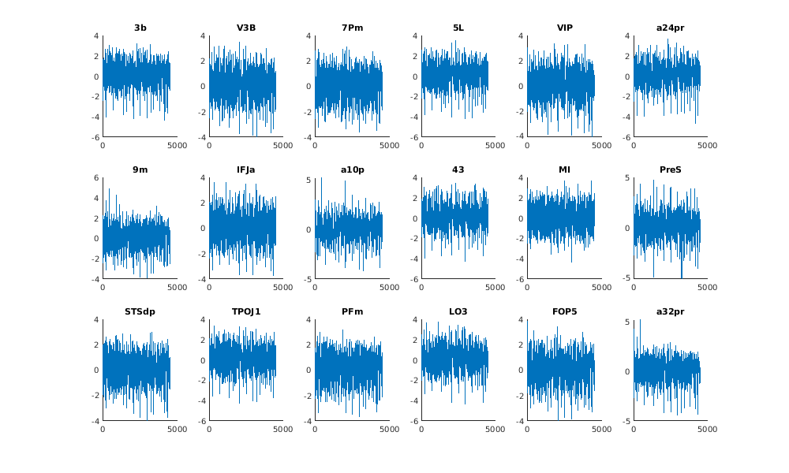
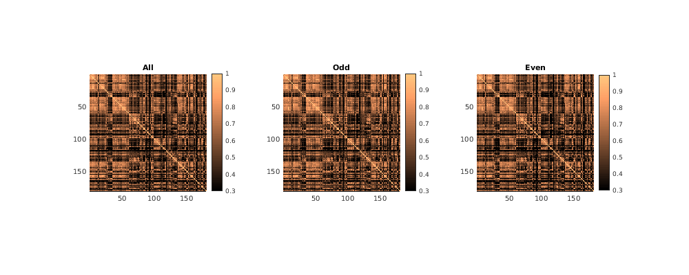

Example 12: Resting-state functional connectivity
Contents
Introduction
% In this script, we show an example of how one might perform a functional- % connectivity analysis on the resting-state data collected as part of NSD. % This type of data and analysis is often termed 'resting-state functional % connectivity' (RSFC). In its simplest form, RSFC is essentially just % correlating time-series across different voxels (or regions). % % Skills/concepts: % - Loading the NSD pre-processed time-series data % - Simple forms of signal processing and normalization % - Using the HCP_MMP atlas
General setup
% define
subjix = 6;
Load atlas parcellation
roi1 = load_untouch_nii(sprintf('~/nsd/nsddata/ppdata/subj%02d/func1pt8mm/roi/HCP_MMP1.nii.gz',subjix)); roilabel1 = read_ctab(sprintf('~/nsd/nsddata/freesurfer/subj%02d/label/HCP_MMP1.mgz.ctab',subjix));
Load and prepare time-series data
% prepare projection matrix to perform high-pass filtering polymatrix = constructpolynomialmatrix(226,0:1); % constant term, linear term pmatrix = projectionmatrix(polymatrix); % create projection matrix % load time-series data ptimeseries = []; % time x 2 runs x 10 sessions x 180 ROIs sesstoload = 21:30; runstoload = [1 14]; for p=1:length(sesstoload) fprintf('sess=%d...',sesstoload(p)); for r=1:length(runstoload) % load data file0 = '~/nsd/nsddata_timeseries/ppdata/subj%02d/func1pt8mm/timeseries/timeseries_session%02d_run%02d.nii.gz'; a1 = load_untouch_nii(sprintf(file0,subjix,sesstoload(p),runstoload(r))); data = squish(single(a1.img),3); % XYZ x time % prepare time series for each of the ROIs in the atlas for roi=1:180 % average across voxels temp = mean(data(find(roi1.img==roi),:),1)'; % time x 1 % high-pass filter the data (i.e. subtract mean and linearly detrend) temp = pmatrix*temp; % z-score temp = calczscore(temp); % record ptimeseries(:,r,p,roi) = temp; % Note that RSFC analyses typically involve more aggressive procedures that % attempt to remove noise from the time-series data. Also note that in the % code above, the time series from different voxels are averaged before % detrending and normalization, but one might wish to average as the last % step instead (the order of operations will affect the result). end end end
sess=21...sess=22...sess=23...sess=24...sess=25...sess=26...sess=27...sess=28...sess=29...sess=30...
Visualize the data for sanity checking
% plot time series for every 10th region figureprep([100 100 1000 600],1); for roi=10:10:180 subplot(3,6,roi/10); hold on; plot(squish(ptimeseries(:,:,:,roi),3)); title(roilabel1.struct_names{roi}); end
Perform functional connectivity
% define wh = {1:10 1:2:10 2:2:10}; % define sets of sessions to analyze whstr = {'All' 'Odd' 'Even'}; % corresponding text labels % compute correlation matrices cmatrix = []; % roi x roi for p=1:length(wh) % concatenate data across runs and sessions data0 = squish(ptimeseries(:,:,wh{p},:),3); % time x roi % compute pairwise correlations cmatrix(:,:,p) = calcconfusionmatrix(data0,[],2); end % visualize the results figureprep([100 100 1000 400],1); for p=1:3 subplot(1,3,p); hold on; imagesc(cmatrix(:,:,p),[0.3 1]); axis image tight; set(gca,'YDir','reverse'); colormap(copper); colorbar; title(whstr{p}); end
% Notice that pairwise correlations are generally highly positive. % This is likely due to global noise sources in the data that tend % to cause time series to be correlated, hence motivating efforts % in the field to attempt to remove these sources of noise.